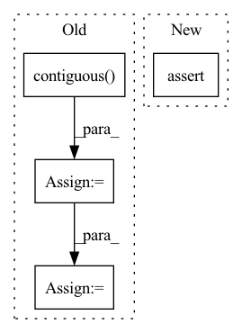

Pattern ID :2923
Before Change
// Back to batch first
attn_scores = torch.stack(attn_scores).transpose(0, 1)
mel_outputs = torch.stack(mel_outputs).transpose(0, 1).contiguous()
stop_tokens = torch.stack(stop_tokens).transpose(0, 1).squeeze(2)
// (B, T", mel_dim*r) -> (B, T, mel_dim)
mel_outputs = mel_outputs.reshape(B, -1, self.mel_dim)
return mel_outputs, stop_tokens, attn_scores
After Change
stop_tokens = torch.cat(stop_tokens, dim=1) // (B, T_decoder)
// Validation check
assert greedy or mel_outputs.size(1) == T_decoder
return mel_outputs, stop_tokens, attn_scores
In pattern: SUPERPATTERN
Frequency: 3
Non-data size: 4
Instances Fragment ID: 16089719
Project Name: thuhcsi/tacotron
Commit Name: fea9ec535ec373aad564646f4f292fbee0217c29
Time: 2021-03-18
Author: johnson.tsing@gmail.com
File Name: model/tacotron.py
M Class Name: Decoder
N Class Name: Decoder
M Method Name: forward(4)
N Method Name: forward(4)
M Parent Class: nn.Module
N Parent Class: nn.Module
M File Name: model/tacotron.py
N File Name: model/tacotron.py
M Start Line: 87
M End Line: 187
N Start Line: 88
N End Line: 180
Before Change
// Back to batch first
attn_scores = torch.stack(attn_scores).transpose(0, 1)
mel_outputs = torch.stack(mel_outputs).transpose(0, 1).contiguous()
stop_tokens = torch.stack(stop_tokens).transpose(0, 1).squeeze(2)
// (B, T", mel_dim*r) -> (B, T, mel_dim)
mel_outputs = mel_outputs.reshape(B, -1, self.mel_dim)
return mel_outputs, stop_tokens, attn_scores
After Change
stop_tokens = torch.cat(stop_tokens, dim=1) // (B, T_decoder)
// Validation check
assert greedy or mel_outputs.size(1) == T_decoder
return mel_outputs, stop_tokens, attn_scores
Fragment ID: 16089725
Project Name: thuhcsi/tacotron
Commit Name: fea9ec535ec373aad564646f4f292fbee0217c29
Time: 2021-03-18
Author: johnson.tsing@gmail.com
File Name: model/tacotron2.py
M Class Name: Decoder
N Class Name: Decoder
M Method Name: forward(4)
N Method Name: forward(4)
M Parent Class: nn.Module
N Parent Class: nn.Module
M File Name: model/tacotron2.py
N File Name: model/tacotron2.py
M Start Line: 127
M End Line: 224
N Start Line: 127
N End Line: 216
Before Change
def forward(self, pred, target, mask=None):
pred = pred.contiguous().view(pred.size()[0], -1)
target = target.contiguous() .view(target.size()[0], -1)
if mask is not None:
mask = mask.contiguous().view(mask.size()[0], -1)
pred = pred * mask
target = target * mask
a = torch.sum(pred * target)
b = torch.sum(pred)
c = torch.sum(target)
d = (2 * a) / (b + c + self.eps)After Change
torch.Tensor: The loss value.
assert pred.size() == gt.size() and gt.numel() > 0
if mask is None:
mask = torch.ones_like(gt)
assert mask.size() == gt.size() Fragment ID: 16089721
Project Name: open-mmlab/mmocr
Commit Name: 1cbc42eceb40334c56474b979b1ac5be0065280a
Time: 2022-07-20
Author: gaotongxiao@gmail.com
File Name: mmocr/models/common/losses/dice_loss.py
M Class Name: DiceLoss
N Class Name: MaskedDiceLoss
M Method Name: forward(4)
N Method Name: forward(4)
M Parent Class: nn.Module
N Parent Class: nn.Module
M File Name: mmocr/models/common/losses/dice_loss.py
N File Name: mmocr/models/common/losses/dice_loss.py
M Start Line: 16
M End Line: 31
N Start Line: 25
N End Line: 58